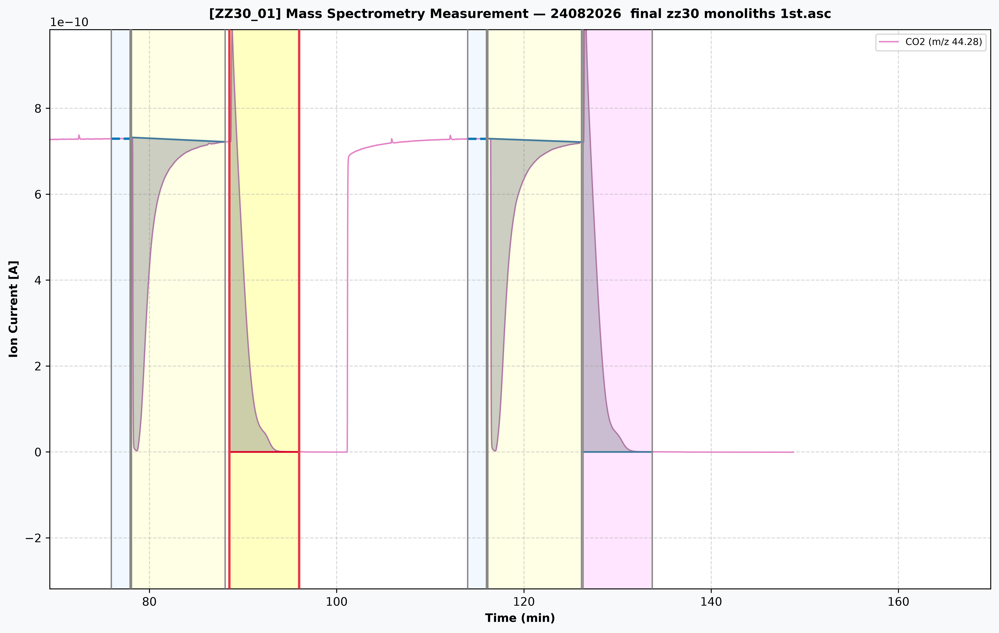

ZZ30_01
Figure: Continuous Multi-Cycle Adsorption (yellow fill) and Desorption (pink fill) Simpson Composite Integration.
| Step | Origin Area (A·min) | |A| (A·min) | S_base (A) | k (A⁻¹) | nCO₂ (mol) | nCO₂ (mmol) | q (100% Mass) | q (Dry Mass) [mmol/g] |
|---|---|---|---|---|---|---|---|---|
| Ads_2 | -1.5219e-09 |
1.5219e-09 |
7.2777e-10 |
2.061e+08 |
1.2864e-03 | 1.2864 | 2.5449 | 3.2378 |
| Des_3 | 1.5214e-09 |
1.5214e-09 |
7.2777e-10 |
2.061e+08 |
1.2860e-03 | 1.2860 | 2.5441 | 3.2368 |
| Ads_5 | -1.4818e-09 |
1.4818e-09 |
7.2777e-10 |
2.061e+08 |
1.2526e-03 | 1.2526 | 2.4779 | 3.1525 |
| Des_6 | 1.4484e-09 |
1.4484e-09 |
7.2777e-10 |
2.061e+08 |
1.2243e-03 | 1.2243 | 2.4219 | 3.0814 |
| Ads_8 | -1.5371e-09 |
1.5371e-09 |
7.2777e-10 |
2.061e+08 |
1.2993e-03 | 1.2993 | 2.5704 | 3.2702 |
| Des_9 | 1.4320e-09 |
1.4320e-09 |
7.2777e-10 |
2.061e+08 |
1.2104e-03 | 1.2104 | 2.3945 | 3.0465 |
• Molar Volume at Experimental Temperature: V_m(T₂) = V_m(T₁) × (T₂ + 273.15) / (T₁ + 273.15)
• Total Molar Flow Rate: ṅ_total = Flow_total / V_m(T₂) (mol/min)
• Detector Sensitivity Constant: k = C₀ / S_base (A⁻¹)
• Moles of Adsorbed / Desorbed CO₂: nCO₂ = ṅ_total × k × |A| (mol)
• Equilibrium Adsorption Capacity: q = nCO₂ (mmol) / Mass_active (g) (mmol/g)
• Desorption Recovery Ratio: Recovery (%) = [ q_des(dry) / q_ads(dry) ] × 100%